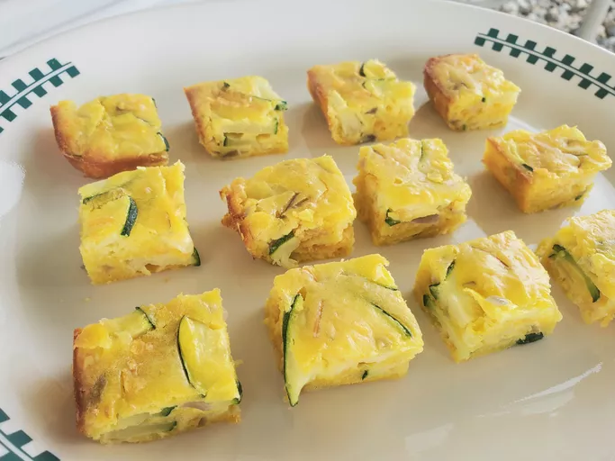

Abhishekbhai
Zuchiini
Zuchiini

Description
Made with Bisquick,this zucchini is delicious,easy,and perfect for any occasions
zucchini,cheddar cheese,and onions are baked together,resulting in irresistible
bite sized appetizers.
Ingredients
- 3 Cups Sliced Zucchini
- 1 cup all purpose baking mix
- 4 eggs beaten
- 1/2 cup chopped onion
- 1/2 cup shredded cheddar cheese
- 1/2 cup vegetable oil
- 1 clove garlic,minced
Steps
- Preheat the oven to 350 degrees F (175 degrees c)
- Mix Zucchini,all purpose baking mix,eggs,onion,cheddar,oil,garlic,and salt
together in a large bowl until well combined.Spread mixture into the prepared
baking dish
- Bake in the preheated oven until bubbly and lightly browned,about 25minutes.Cut into 36 pieces